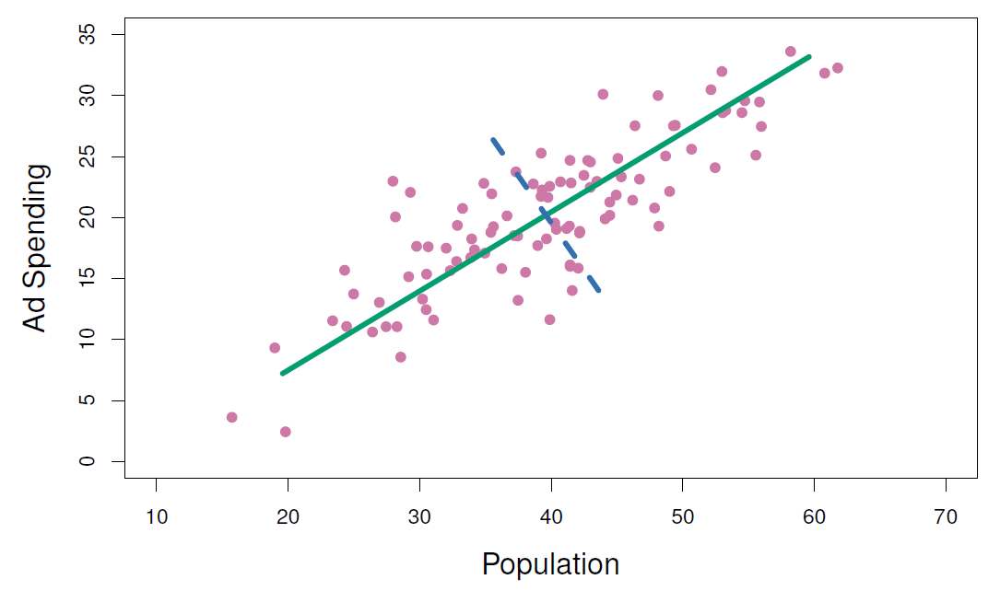
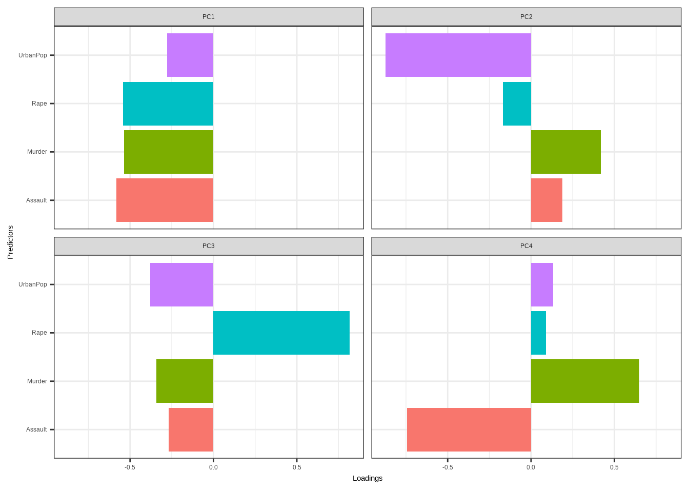
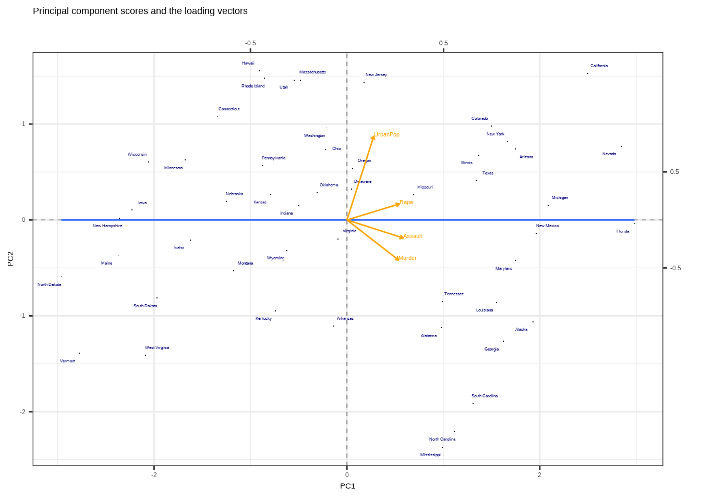
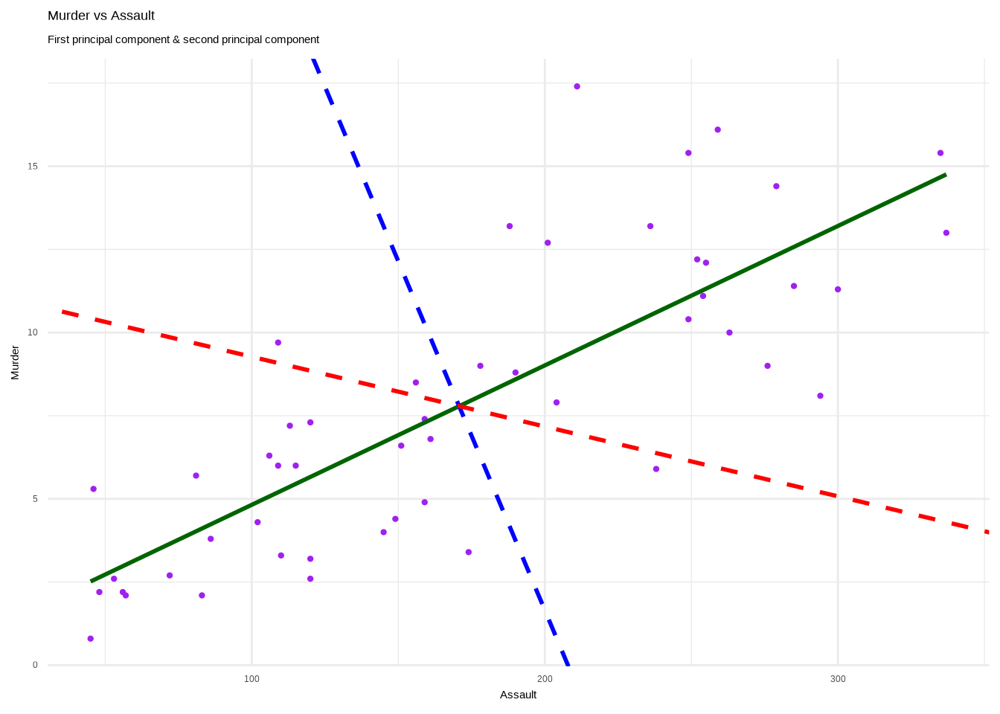

12.3 Geometric interpretation
This is the representation of the Ad Spending vs Population with the first and second principal components. Let’s go a bit more in deep about how to make such as visualization.

USArrests <- as_tibble(USArrests, rownames = "state")
USArrests## # A tibble: 50 × 5
## state Murder Assault UrbanPop Rape
## <chr> <dbl> <int> <int> <dbl>
## 1 Alabama 13.2 236 58 21.2
## 2 Alaska 10 263 48 44.5
## 3 Arizona 8.1 294 80 31
## 4 Arkansas 8.8 190 50 19.5
## 5 California 9 276 91 40.6
## 6 Colorado 7.9 204 78 38.7
## 7 Connecticut 3.3 110 77 11.1
## 8 Delaware 5.9 238 72 15.8
## 9 Florida 15.4 335 80 31.9
## 10 Georgia 17.4 211 60 25.8
## # … with 40 more rows
## # ℹ Use `print(n = ...)` to see more rowsUse of the scale() function to show how data are centered
USArrests %>%
select(-state) %>%
scale() %>%
as.data.frame() %>%
map_dfr(mean)## # A tibble: 1 × 4
## Murder Assault UrbanPop Rape
## <dbl> <dbl> <dbl> <dbl>
## 1 -7.66e-17 1.11e-16 -4.33e-16 8.94e-17USArrests %>%
select(-state)%>%
mutate(z_Murder=(Murder-mean(Murder))/sd(Murder),
z_Assault=(Assault-mean(Assault))/sd(Assault),
z_UrbanPop=(UrbanPop-mean(UrbanPop))/sd(UrbanPop),
z_Rape=(Rape-mean(Rape))/sd(Rape)) %>%
map_dfr(mean)## # A tibble: 1 × 8
## Murder Assault UrbanPop Rape z_Murder z_Assault z_UrbanPop z_Rape
## <dbl> <dbl> <dbl> <dbl> <dbl> <dbl> <dbl> <dbl>
## 1 7.79 171. 65.5 21.2 -7.66e-17 1.11e-16 -4.33e-16 8.94e-17 # z varables have mean zeroRepresentation of the loadings: \(\phi_1\) and \(\phi_2\) are the first and the second principal components.
USArrests_pca <- USArrests %>%
select(-state) %>%
prcomp(scale = TRUE)
USArrests_pca## Standard deviations (1, .., p=4):
## [1] 1.5748783 0.9948694 0.5971291 0.4164494
##
## Rotation (n x k) = (4 x 4):
## PC1 PC2 PC3 PC4
## Murder -0.5358995 0.4181809 -0.3412327 0.64922780
## Assault -0.5831836 0.1879856 -0.2681484 -0.74340748
## UrbanPop -0.2781909 -0.8728062 -0.3780158 0.13387773
## Rape -0.5434321 -0.1673186 0.8177779 0.08902432tidy(USArrests_pca, matrix = "loadings")## # A tibble: 16 × 3
## column PC value
## <chr> <dbl> <dbl>
## 1 Murder 1 -0.536
## 2 Murder 2 0.418
## 3 Murder 3 -0.341
## 4 Murder 4 0.649
## 5 Assault 1 -0.583
## 6 Assault 2 0.188
## 7 Assault 3 -0.268
## 8 Assault 4 -0.743
## 9 UrbanPop 1 -0.278
## 10 UrbanPop 2 -0.873
## 11 UrbanPop 3 -0.378
## 12 UrbanPop 4 0.134
## 13 Rape 1 -0.543
## 14 Rape 2 -0.167
## 15 Rape 3 0.818
## 16 Rape 4 0.0890tidy(USArrests_pca, matrix = "scores")## # A tibble: 200 × 3
## row PC value
## <int> <dbl> <dbl>
## 1 1 1 -0.976
## 2 1 2 1.12
## 3 1 3 -0.440
## 4 1 4 0.155
## 5 2 1 -1.93
## 6 2 2 1.06
## 7 2 3 2.02
## 8 2 4 -0.434
## 9 3 1 -1.75
## 10 3 2 -0.738
## # … with 190 more rows
## # ℹ Use `print(n = ...)` to see more rowslabel_value<-c("1"="PC1","2"="PC2","3"="PC3","4"="PC4")
tidy(USArrests_pca, matrix = "loadings") %>%
ggplot(aes(value, column)) +
facet_wrap(~ PC,labeller = labeller(.cols = label_value)) +
geom_col(aes(fill=column),show.legend = F)+
labs(x= "Loadings",y="Predictors")+
theme_bw()
Representation of the scores
pca_rec <- recipe(~., data = USArrests) %>%
step_normalize(all_numeric()) %>%
step_pca(all_numeric(), id = "pca") %>%
prep() %>%
bake(new_data = NULL)
pca_rec## # A tibble: 50 × 5
## state PC1 PC2 PC3 PC4
## <fct> <dbl> <dbl> <dbl> <dbl>
## 1 Alabama -0.976 1.12 -0.440 0.155
## 2 Alaska -1.93 1.06 2.02 -0.434
## 3 Arizona -1.75 -0.738 0.0542 -0.826
## 4 Arkansas 0.140 1.11 0.113 -0.181
## 5 California -2.50 -1.53 0.593 -0.339
## 6 Colorado -1.50 -0.978 1.08 0.00145
## 7 Connecticut 1.34 -1.08 -0.637 -0.117
## 8 Delaware -0.0472 -0.322 -0.711 -0.873
## 9 Florida -2.98 0.0388 -0.571 -0.0953
## 10 Georgia -1.62 1.27 -0.339 1.07
## # … with 40 more rows
## # ℹ Use `print(n = ...)` to see more rows# loadings
df_rotation<-USArrests_pca$rotation %>%
as.data.frame() %>%
rownames_to_column()
# range(df_rotation$PC1)
pca_rec%>%
arrange(-PC1) %>%
ggplot(aes(-PC1,-PC2,label=state))+
geom_point(shape=".")+
ggrepel::geom_text_repel(color="navy",size=2)+
geom_hline(yintercept=0,linetype="dashed",size=0.2)+
geom_vline(xintercept=0,linetype="dashed",size=0.2)+
geom_smooth(method = "lm",se=F,size=0.5)+
geom_segment(data=df_rotation,
mapping=aes(x=0,xend=-PC1,y=0,yend=-PC2),
inherit.aes = FALSE,
arrow = arrow(length = unit(0.1, "cm")),
color="orange") +
geom_text(data=df_rotation,
mapping=aes(x=-PC1,y=-PC2,label=rowname),
color="orange",size=3,vjust=0,hjust=0)+
scale_x_continuous(name = "PC1",
sec.axis = sec_axis(trans=~.*(1/2),
name="",
breaks=c(-0.5,0.5,0.5)))+
scale_y_continuous(name = "PC2",
sec.axis = sec_axis(trans=~.*1,
name="",
breaks=c(-0.5,0.5,0.5)))+
#xlim(-3,3)+
labs(title="Principal component scores and the loading vectors",x="PC1",y="PC2")+
theme_bw()## `geom_smooth()` using formula 'y ~ x'
sources:
pca <- prcomp(~Assault+Murder, USArrests[,-1])
slp <- with(pca, 5*rotation[2,1] / rotation[2,2])
slp2 <- with(pca, 0.5*rotation[2,1] / rotation[2,2])
int <- with(pca, center[2] - slp*center[1])
int2 <- with(pca, center[2] - slp2*center[1])
#pca$center
#pca$rotation
ggplot(USArrests,aes(Assault,Murder))+
geom_point(size=0.8,color="purple") +
stat_smooth(method=lm, color="darkgreen", se=FALSE) +
geom_abline(slope=slp, intercept=int,
color="blue",linetype="dashed",size=1)+
geom_abline(slope=slp2, intercept=int2,
color="red",linetype="dashed",size=1)+
labs(title="Murder vs Assault",
subtitle="First principal component & second principal component")+
theme_minimal()## `geom_smooth()` using formula 'y ~ x'